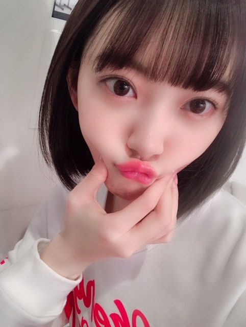

2019/0318Monあまいもの食べたい
最近無性に甘いものが食べたくて
家族でスーパーに行ってフルーツを大量買いしました。笑
いちご ザクロ メロン 文旦 梨...
う〜ん 早く桃の季節にならないかな〜

あ〜温泉行きたいな〜
ar発売中です！！
見てくれたかな？
茶髪ロングです〜次号からはショート

しゅわあまさん
ほろにがさん
どちらがタイプですか？✨


エクステ結んで地毛だけ残すとショート風。笑
最近はいろんな撮影や収録をしながら
アルバム制作をしています☺︎
諸々お楽しみに！
告知
3/23 B.L.T.
3/21(木)19:00〜22:00 テレビ朝日
「アメトーーク!ゴールデン3時間SP」
絵心ない芸人のコーナーに出させていただきました！ずっと見ていた大好きな番組に初めて参加させていただけて幸せです。私なりの画風で挑ませていただきました✨
3/21(木)20:00〜 TBS
「CDTVスペシャル！」
卒業シーズンスペシャルですが何を披露するかはお楽しみに！こちらもお見逃しなくです！
3/23(土)23:00～24:30 NHK総合
「#坂道テレビ ～乃木と欅と日向～」
齊藤京子ちゃんと小林由依ちゃんと料理をしたりお話しをしました✨人見知りあまり出てないといいな。笑

#みなみおな
#2人共大人になったね
#マイペース
では！！
2019/03/18 20:24


コメント(424)
自分はしゅわあまさんタイプです ♀️
アメトーークも坂道テレビも楽しみです！どんな絵描いてどんな料理作ってるんだろ
これからもっともっとみおなのことテレビでみたいな！！！
arの堀ちゃんとても可愛かったよ。
また、いよいよ今週アメトーーク!放送されるね。
堀ちゃんの活躍楽しみにしてるね。
アメトークなど番組楽しみにしてます！
かわいい(⌯˃̶᷄ ⁻̫ ˂̶᷄⌯)
みなみおな最高 ほんと大人になった
私、起きる。のみなみおなのシーン大好き
いいコンビだよね〜ヾ(*>∀<)ﾉﾞ
アメトーク
桃めちゃめちゃ美味しいよね！
ショートでもロングでも似合う未央奈って…(o´艸`)♡
みなみおな待ってました！！私が1番好きなコンビ！！
みなみおなは世界を救うからね笑笑
大好き〜♡
甘いもの食べたい…その気持ち、すごくわかる。
僕は特に柑橘系かな。毎日のようにみかん食べてます笑
ar見たよ！本当に綺麗でした(*^^*)
どっちも好きだけど… ほろにがさんが好みかな笑
アメトーク楽しみ！塾だから録画しないと…
世の中の人々にその素晴らしい画力が伝わる日が来たのか笑
アルバム個握行きますね！楽しみにしてます(*´꒳`*)
でわ、お体に気をつけて。
またコメントしますっ
フルーツはなに食べても美味しいよね
子供の頃住んでいた自宅や、近所の家の庭には柿、ザクロ、イチヂクなどありよく食べていた、、今ではスーパーで買って食べている。
今の時代は自宅の庭に果物の木を植える家は少ない気がするね
雨トークおもろそう、、観ようっと(^o^)
テレビの楽しみがめっちゃ増える( ^ω^ )
ブログの更新いつもありがとうございます｡常に新しい状況が聞けて嬉しいです｡
告知もありがとうございます｡BLT誌 とNHK総合テレビの坂道テレビが楽しみです｡ブログは全て読んでいます｡
黒猫ジジ
可愛い
アメトーーク!、CDTVスペシャル、#坂道テレビ見るね(o^^o)
未央ちゃんお休み
斉藤貴巳
ブログ更新ありがとう|＾▽＾)ノ
arさんのみおなめちゃくちゃかわいいね
個人的にはしゅわあまさんがお気に入りです！
アメトーーク！、CDTV、坂道テレビ、必ず見るね
疲れてるのにブログ更新してくれてありがとう
じゃあ、おやすみ～
お二方とも大好き！！☺︎
アメトークとカウントダウンテレビと坂道テレビ楽しみです。
ほろにががいいかな
SONYでした
最近未央奈ロス
握手会行きたいよー
当たってくれー(笑)
ブログ更新ありがとうございます！
随分大人の女性になりましたね！
では21日ポートメッセなごやの握手会でお会いしましょう！
今日もお疲れ様です
フルーツあんまり食べないけど、この時期は何が旬なんですか
（文旦って普通にぶんたんでいいんですか）
arは、しゅわあまならデートだと可愛くていいし、ほろにがだと、街ですれ違った時にカッコいいと思います
後クリームソーダが、美味しそう
4枚目のアルバムも楽しみにしてます
木曜日はアメトークとCDTVで堀ちゃんをたくさん見れるので楽しみにしてます（仕事だと思ってたら祝日でラッキーだった）
乃木坂で卒業ソングならハルジオンとかサヨナラの意味な気がします
みなみおなもすっかり大人になりましたね（今度は飛鳥も加えてね）
これからも頑張って下さい
ありがとうございました
未央奈は、やっぱりショートが良い(๑˃̵ᴗ˂̵)
みなみとの写真も最高♪♪
可愛かです\(//∇//)\
アメトークかぁ…。
良し!!明日はダッシュで帰宅しよう(^^)
体調に気を付けて頑張ってね♪♪
みなみおなさいこー！
桃いいなあ(*￣∇￣)ノ確か４期生に岡山出身のメンバーいたよね。桃食べた事ないとか言うてた。美味しいのに(笑)
ほろにがが好み(*^^*)ほんまに、最近、堀ちゃん前より大人に、しかも綺麗になった。
四国立ち寄った際は道後温泉にでも、寄っていてみてなー。
久しぶりの投稿になりました
自分は、断然、ほろ苦さんが良いです
未央奈ちゃんの活躍に期待し、癒されています
応援しています
前回はブログ「泡は苦かった」にブログと「乃木中」とモバメの感想を書きました！
時間→「No.463 2019年3月15日 01:02」
ブログ更新ありがとうございます！
まずは「#ホットギミック」の感想です！
1枚目から存分に可愛さ炸裂していましたね！透明感も抜群でしたし、やっぱり白似合う～！
映画「ホットギミック」の追加キャストが発表されましたね！えっ、吉岡里帆さんも？(嬉)
好きな女優さんの1人なので凄く嬉しいです！くぅ～！2人の共演が今から待ち遠しいです！
久々の未央奈ポーズやぁ！めっちゃ可愛い～！
お互い花粉症に立ち向かっていきましょう！
続いて「あまいもの食べたい」の感想です！
また未央奈ポーズしてる！今回も可愛いな～！
早く桃の季節になって欲しいですね！それと、パイナップルの季節にもなって欲しいですね！
「ar」、僕はしゅわあまさん派です！
アルバムも「B.L.T.」も出演番組も楽しみ～！未央奈ちゃんの活躍、心から嬉しく思います！
みなみおなのツーショット可愛い！癒される！2人とも大人になったね～！これからもお互い切磋琢磨しながら頑張って欲しいです！色んなコンビがありますが、みなみおなが1番好き！
ここまで読んで頂きありがとうございました！
毎日お仕事お疲れ様です！体調にはくれぐれも気を付けて頑張ってくださいね！
おやすみおな～！
アメトーーク!見るよー録画もした！
アメトーク、絶対見るよ！
昨日は握手会ありがとうございました♡
ar買いました！
しゅわあまさんもほろにがさんも、どっちも好きだけど…
ほろにがさんがどストライクでした♪
でも全部かわいいです！
ワタクシの誕生日にブログ更新してくれたので
未央奈ちゃんからの誕生日プレゼントだと思っておきます 笑
テレビも雑誌も全部チェックするね！
なんでもかわいくなる未央奈さん...尊敬です。
アメトーク出演おめでとう。画伯だもんねー！！ 未央奈は何でも似合うし可愛いよねー。羨ましい！
ちなみに僕も小学校の頃から桃が大好きでした。
最近の俺のブームは種なしブドウです！
まぁ最近っていうか毎年この時期なんやけどね笑
近くのスーパーにトンプソンとクリムゾンという品種のブドウが一緒に包装されてる商品があって、見るとつい買ってしまいます笑
美味しいよ～。
ar、もちろん買ったよ！
俺はほろ苦さん派かな。
最終ページの左側のほろ苦さんが特に好きです。
オシャレと大人っぽさが取り入れられてて良いなぁって思いました！
アルバム、楽しみにしてるよ！
アメトーークとCDTV、時間被ってるからちょっと心配やけど、ちゃんと録画しておきますね！
みなみおな、かわいい！
かわいさもありつつ、最近は大人っぽさを感じる写真もあるなぁって思ってます！
嘘の様に甘いものにハマっている
甘未央奈さんブログ更新ありがとう⁉︎
フルーツは身体にも良いから
ドンドン食べましょう⁉︎(^ ^)
個握お疲れ様でした⁉︎
疲れた時は温泉ですよね⁉︎
一足先に昨日用事終わってから
下呂温泉行ってきましたよ〜〜
ふぅ〜〜疲れが取れましたよ⁉︎(^ ^)
arはロング未央奈見納めなんだね⁉︎
サンダルが多い感じだったね。
またチェックするね⁉︎
番組もチェックするね⁉︎
って予約しときます⁉︎
未央奈ちゃんの絵楽しみ( 笑 )
みなみおなのツーショットは最高すぎる、、♡
ほんまに2人とも可愛いなあ（ ｉ _ ｉ ）
みなみちゃんとのツーショットたくさん見たいからまた載せてください〜
名古屋の握手会行くから待っててね〜！
れに
未央奈が出るテレビ、全部チェックするね～♪
楽しみ(*´∀｀)
おやすみおな～(*´～｀*)
みなみおな好き！
応援してます！頑張ってください！
arの未央奈ちゃん本当に可愛くて、見たとき衝撃を受けました…！最初の方のページは ほろにがさんタイプ！って思ってたのに、最後の方に近づくにつれて しゅわあまさんも可愛い…ってなって、選べなかった(;_;)笑
沢山オフショット載せてくれて嬉しい〜ありがとう♡
告知沢山やね！テレビや雑誌に未央奈出てくれるのすごく嬉しいです！特にアメトーク楽しみだなぁ⸜(*ˊᵕˋ*)⸝
みなみおなの写真も可愛すぎます…！みなみおなの岐阜旅を見て乃木坂好きになったから、今でも大好きなコンビだし、尊い…って思います（笑）
アルバムの収録頑張ってね！
みなみおなエモい！！！
未央奈ポーズが可愛いくて悶絶してます笑
個人的にはしゅわあまな未央奈が好みです。
いよいよ今週はアメトーーク!
楽しみにしてますね！
もちろん、坂道テレビも楽しみ！
私も人見知りだから、すごい気持ちが分かります。
でも、人見知りな未央奈も好きですよ！
最後にみなみおな！
2人の岐阜の旅が懐かしいな。
撮影やアルバム制作と忙しいと思いますが、
お身体には十分に気をつけてくださいね！
同じ岐阜県出身者として、いつも誇りに思っています。
これからも頑張ってくださいね！
堀ちゃんのヘアスタイルはどちらかというとショートが好き
でもどのヘアスタイルでも堀ちゃんは最強に可愛いっス！！
これからも色々続くと思いますが引き続き体調に気をつけて頑張ってください！！
幸せを分けてくれてありがとう！
堀ちゃんのヘアスタイルはどちらかというとショートが好き
でもどのヘアスタイルでも堀ちゃんは最強に可愛いっス！！
これからも色々続くと思いますが引き続き体調に気をつけて頑張ってください！！
ar今度見てきます！
ちなみにどっちも可愛い❤
みなみおなも最高です！
コメントする